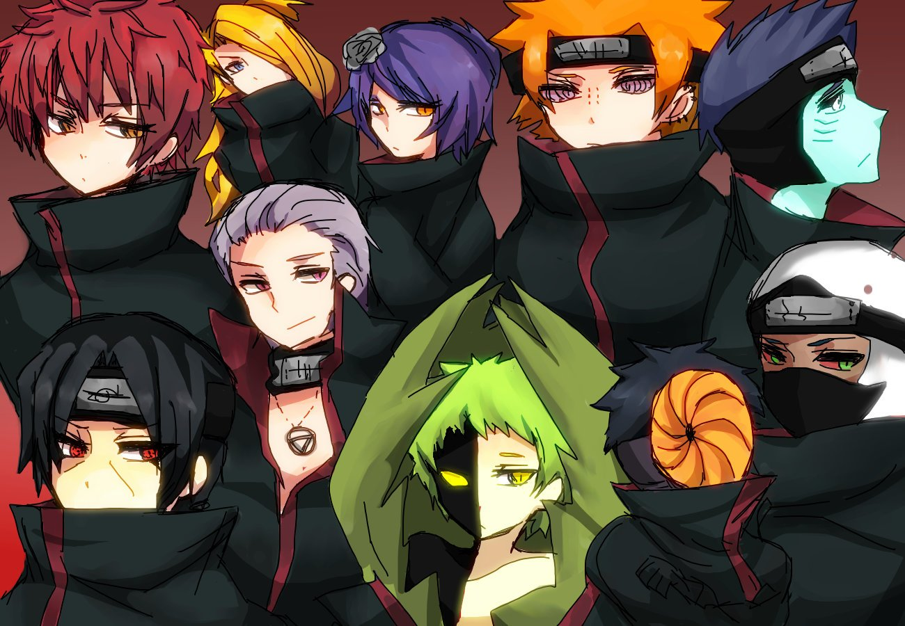

Акацуки очень прикольные
Кольца
Кольца даются признанным членам организации. Положение кольца на руке носителя определяет его положение на статуе Гедо Мазо. Дейдара носит кольцо на указательном пальце правой руки. Иероглиф 「青」голубого цвета. Он так и означает голубой, но это акроним от слова「青龍」, что значит Лазоревый дракон, и относится к стороне Востока. Итачи носит красное кольцо на безымянном пальце правой руки со знаком 「朱」ー киноварь, красный. Акроним к слову 「朱雀」ー Красная птица. Конан кольцо с иероглифом 「白」, что означает «белый» и относится к слову「白虎」- Белый тигр. Иероглиф на кольце Зецу 「亥」. С ним есть небольшая путаница. В японских интернетах пишут, что вообще должно быть 「玄」, и скорее всего именно оно как-то подразумевается. Тогда получится последний из Четырех знаков зодиака — 玄武 — Черная Черепаха. Кисаме его кольцо — 「南」ー юг. Сасори и Тоби делят одно кольцо на двоих (по наследству перешло к Тоби от Данны его Семпая) — 「玉」. Означает шар или драгоценный камень. Акроним слова — 「玉女」. Значение его — красавица, ангел и ещё божество «Гёкудзё», которая держит шар просветления. Кольцо Хидана: 三, означает «три». Кольцо Какузу: 北 «север», отсылка к 北斗 — созвездие Большая Медведица. Кольцо Пейна означает «ноль» — 霊. Ороцимару 空 — небо, пустота.
Значение Акацуки

Акацуки (яп. 暁; Буквальное значение: "Рассвет") — группа шиноби, существовавшая за пределами обычной системы скрытых деревень. В течение нескольких десятилетий, Акацуки принимала различные формы и возглавлялось различными людьми. Хотя каждый её состав считался или диверсантами или преступниками, все они стремились сделать мир лучше для жизни согласно собственному видению. Каждая версия Акацуки имела множество укрытий по всему миру, недоступных либо из-за их удаленности, либо разных мер безопасности, которые их защищали.
Одежда
Члены Акацуки Нагато носили особый вид одежды, а именно длинные, чёрные плащи с красными облаками, красной подкладкой и высокими воротниками до подбородка; Тоби и члены Така надевали такие же плащи, но с капюшоном. Красные облака представляют кровавый дождь, который упал в Амегакуре во времена войн, и означали символ правосудия для изначальных членов организации. Мантии довольно отличительные, поэтому членов Акацуки легко узнать даже издалека.